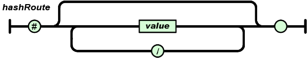

A client side router provides state management. What? A route is a URL. A state is the
active data and appearance of the application. So when the url changes, the router performs some
work and then the application mutates, but doesn't have to reload the page. This is especially
great for making web sites feel more responsive, like desktop apps.
SugarSkull uses HTML5 pushState and falls back to older techniques to support all browsers.
Click here to try to enter a route that does not exist.
SugarSkull uses HTML5 pushState and falls back to older techniques to support all browsers.
Click here to try to enter a route that does not exist.
We divide the url into two parts. First the server-side (everything before the '#'), and then
the client-side (everything after the '#'). The second part is called the HashRoute.
The hash route looks like this...

We keep track of what happens to the url, if it changes, we fire off some function(s) that you have specified.
Single-page apps reduce unnecessary page-reloads, and enhance the overall user experience with responsiveness.
But with this technique comes many edge cases.
For example, let's say a route want's to show some new content. Content relative only to other routes needs to hide, but each route's functions shouldn't have to duplicate the code that manages this. What about when leaving a route or when leaving all routes, you may want to preform some cleanup. etc. etc.
SugarSkull addresses a long list of edge cases with a very simple API.
This demo illustrates how you can build single pages apps quickly and easily.
For example, let's say a route want's to show some new content. Content relative only to other routes needs to hide, but each route's functions shouldn't have to duplicate the code that manages this. What about when leaving a route or when leaving all routes, you may want to preform some cleanup. etc. etc.
SugarSkull addresses a long list of edge cases with a very simple API.
This demo illustrates how you can build single pages apps quickly and easily.
Whats happening in this demo
Simple Configuration
Configuration is done through an object literal
var router = SS.router(this, {
"about": { // a RegExp
on: ["about"]
},
"how": { // ([a-zA-Z0-9_\-]+)
on: ["how"]
},
"why": {
on: ["why"]
},
"demoExplanation": {
on: ["demo"]
},
// there are a few optional methods for convenience, they
notfound: {
// you can define a function anywhere and refer to it here with its function name or you
// can specify a string that represents a function name which belongs to the hostObject
// (the object that is specified as the first parameter of the router). No other methods are
// fired if this the route is 'not found'.
on: [notFound]
},
beforeall: {
on: ["beforeall"]
},
afterall: {
on: ["afterall"]
},
leaveall: {
on: ["leaveall"]
}
});